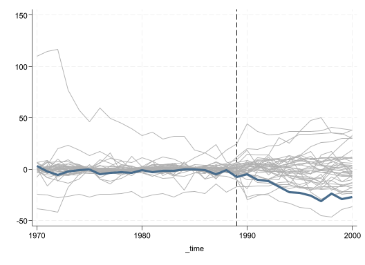
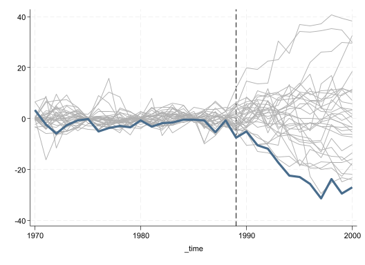

Code
(31 missing values generated)Frankensteining a Clone
Important
The goal of Causal Analysis is to identify how a treatment affects the outcome by itself, once all other factors are kept constant or controlled for.
From a theoretical point of view, that is very easy. You simply compare two Potential outcomes:
\[ TE_i = y_i(1)- y_i(0) \]
and aggregate those outcomes as needed:
\[ ATT=E(TE_i|D=1);ATU=E(TE_i|D=0);ATE=E(TE_i);ATX=E(TE_i|X) \]
Unfortunately, we only observe one outcome. You are either treated or untreated…So how do we fix this?
You need to find counterfactuals so both observed (\(X\)) and unobserved (\(e\)) are the same (or close) between treated and contro group.
RCT: Gold Standard, You randomize treatment and compare means. If correctly done, \(X's\) and \(e's\) will be comparable across groups, and ATE’s can be identified.
Reg + FE: For other cases, we just work with observational data. First method, Regression (OLS?). Adding covariates controls for their presence, working as a pseudo balancing approach.
You could also add fixed effects, to control for factors that are fixed (across time), but you do not observe. (requires Panel data).
It works if Treatment occurs at the same time for everyone treated. and if Unobserved are “fixed”
Instrumental variables: 2nd Best to RCT. It uses IV to generate a small randomization process that can be used for estimating ATT. Technically it compares the effect among those potentially affected by the random instrument. Requires Randome instrument, and no-defiers. Its a Local ATE
Matching and Reweigthing. Similar to Regression, but better to balance characteristics. The goal is to find units with similar characteristics for all treated units. You can estimate ATE, ATT or ATU. Depends on how well Matching is done
RDD. If you have data where treatment depends on a single variable and a threshold, you can use this to identify TE for those “Near” the threshold. They Key assumption, treatment assigment is as good at random at the threshold.
DD. Differences in differences uses variation across time and across individual to identify treatment effects. Under PTA, and SUTVA
Dif. within individuals eliminates common time trends, Dif across time, eliminates individual fixed effects. DD provide you with ATT’s for the treated, after treatment.
\[ATT=(Y_{g=1,t=1}-Y_{g=1,t=0}) - [(Y_{g=0,t=1}-Y_{g=0,t=0})]\]
Can be generalized to Many periods and many groups, but requires stronger assumptions (no anticipation and no change in treatment status), and further aggregation.
Or combined with Matching for even better results.
As previous Cases, Synthetic control aims to identify treatment constructing appropriate “counterfactuals”.
It is said that Synthethic controls may be even MORE credible methodology, because the treated group is by construction Exogenous…but how?
The treated group is a Case Study.
An isolated event or unit that is affected by a treatment, and should not affect other units !
In this sense, the treatment is exogenous, because it affected a single unit.
But what about the counterfactual?
In other methods (in particular Matching), our “conterfactual” mean to look for observations that had the same characteristics as the treated observation.
Some times, we needed to settle to use a single “bad” control, because we couldnt find one better. (people are very different).
SC is different. You have MANY controls, so why settle with only one?
SC is like Dr Frankenstein, where you “build” a single comparison group by averaging information of all controls.
You build the synthetic control getting “weighted averages”.
But…we assume you can see all units across time (panel data)
Where has this method been used:
Just to name a few.
The Donor Pool should be a good match for the treated unit. Thus, the synthethic control should be Zero before treatment.
SUTVA. Only the treated group is affected by treatment. The control group should be unaffected (no spill over effects).
There should be NO other “event” in the period of analysis. (Thus we only capture treatment impact)
Recall, we want to estimate TE for the single untreated unit:
\[ATT_{1t} = Y_{1t}- Y(0)_{1t} \]
but we do not observe \(Y(0)_{1t}\). We only know that before treatment
\[ATT_{1t} = Y_{1t}- Y(0)_{1t}=0\]
We could construct a synthetic control:
\[\hat Y_{1t}(0) = \sum_{i = 2}^N w_i Y_{it} \]
At the very least, the weights \(w\) should be such that before treatment (\(G\)):
\[Y_{1t} = \sum_{i \neq 1} w_i Y_{it} \ \forall \ t<G \]
At the very least, the weights \(w\) should be such that before treatment (\(G\)):
\[Y_{1t} = \sum_{i \neq 1} w_i Y_{it} \ \forall \ t<G \]
Havent we seen seen something like this Before? OLS:
\[y = x\beta + e\] \[y^t_{1} = \color{red}{a_0} + y_i^t w + e\]
\[ \begin{bmatrix} y^1_1 \\ y^1_2 \\ ... \\ y^1_{G-1} \\ \end{bmatrix} = \color{red}{a_0} + \begin{bmatrix} y^2_1 & y^3_1 & ... & y^k_1 \\ y^2_2 & y^3_2 & ... & y^k_2 \\ ... & ... & ... & ...\\ y^2_{G-1} & y^3_{G-1} & ... & y^k_{G-1}\\ \end{bmatrix} \begin{bmatrix} w_2 \\ w_3 \\ ... \\ w_k \end{bmatrix} + e \]
\[y^t_{1} = \color{red}{a_0} + y_i^t w + e\]
OLS can help you find the weights, which can then be used for obtaining the “Synthetic” control
…
(option xb assumed; fitted values)
(options xb penalized assumed; linear prediction with penalized coefficients)\[\begin{bmatrix} y^t_{1} \\ x^t_{1} \\ z^t_{1} \end{bmatrix} = \color{red}{(a_0=0)} + \begin{bmatrix} y^t_{2} & y^t_{3} ... & y^t_{k} \\ x^t_{2} & x^t_{3} ... & x^t_{k} \\ z^t_{2} & z^t_{3} ... & z^t_{k} \end{bmatrix} \begin{bmatrix} w_2 \\ w_3 \\ ... \\ w_k \end{bmatrix} + e \]
qui:frause smoking, clear
ren (cigsale lnincome beer age15to24 retprice) ///
(var1 var2 var3 var4 var5)
qui: reshape long var, i(state year) j(new)
qui: reshape wide var, i(year new) j(state)
label define new 1 "cigsale" ///
2 "lnincome" ///
3 "beer" ///
4 "age15to24" ///
5 "retprice", modify
label values new new
ren var3 cal_out
qui:reg cal_out var* if year<=1988, nocons
predict mcigh1
qui: lasso linear cal_out var* if year<=1988, nocons
predict mcigh2
two (line cal_out year if new==1, lw(0.5) ) ///
(line mcigh1 mcigh2 year if new==1, lw(0.5) ) , ///
legend(order(1 "California" 2 "OLS Synthetic" 3 "LASSO Synthetic")) xline(1988)(option xb assumed; fitted values)
(32 missing values generated)
(options xb penalized assumed; linear prediction with penalized coefficients)\[w = \min_w \sum_{m=1}^K \left[ v_m \left( X_{1t}-\sum_{j=2}^J w_j X_{jt} \right)^2 \right] \]
However, we also need to impose restrictions on Weights:
This is a maximization problem with constrains. Restrictions ensure the prediction is based on a “convex” set, avoiding extrapolation.
When using SC, you essentially have a sample \(n=1\) to estimate an effect. How do you know that effect is significant? and not just noise?
“how unusual is this estimate under the null hypothesis of no policy effect?”.
Excluding the treated unit, estimate the pseudo effect of every other unit in the dataset. These are placebos, and you should expect the effect to be zero for them…but you may see some positive and negative effects.
Calculate the pre- and post- treament Root mean squared prediction error for all units (treated and placebos).
\[ \begin{aligned} RMSPE_i^{pre} &= \sqrt{ \frac{1}{g-1}\sum_{t=1}^{g-1}(y_{i,t}-\sum_{j\neq i}w_j^i y_{j,t})^2 } \\ RMSPE_i^{post} &= \sqrt{ \frac{1}{T-g+1}\sum_{t=g}^{T}(y_{i,t}-\sum_{j\neq i}w_j^i y_{j,t})^2 } \end{aligned} \]
Estimate the ratio between Pre and Post RMSPE, and rank them. \[Ratio_i = \frac{RMSPE_i^{post}}{RMSPE_i^{pre}} \]
The p-value for the treatment is proportional to the Rank:
\[pvalue_i = \frac{rank(i)}{Tot}\]
qui:frause smoking, clear
xtset state year
tempfile sc3
** For California
synth cigsale cigsale(1970) cigsale(1975) cigsale(1980) cigsale(1985) cigsale(1988), trunit(3) trperiod(1989) keep(`sc3') replace
** Same Specification for All other States excluding California
forvalues i =1/39{
if `i'!=3 {
local pool
foreach j of local stl {
if `j'!=3 & `j'!=`i' local pool `pool' `j'
}
tempfile sc`i'
synth cigsale cigsale(1970) cigsale(1975) cigsale(1980) cigsale(1985) cigsale(1988), ///
trunit(`i') trperiod(1989) keep(`sc`i'') replace counit(`pool')
}
}
** Some data cleaning and prepration
forvalues i =1/39{
use `sc`i'' , clear
gen tef`i' = _Y_treated - _Y_synthetic
egen sef`i'a =mean( (_Y_treated - _Y_synthetic)^2) if _time<=1988
egen sef`i'b =mean( (_Y_treated - _Y_synthetic)^2) if _time>1988
replace sef`i'a=sqrt(sef`i'a[1])
replace sef`i'b=sqrt(sef`i'b[_N])
drop if _time==.
keep tef`i' sef`i'* _time
save `sc`i'', replace
}
**
** Merging all together, and getting ready to plot
**
use `sc1', clear
forvalues i = 2/39 {
merge 1:1 _time using `sc`i'', nogen
}
global toplot
global toplot2
forvalues i = 1/39 {
global toplot $toplot (line tef`i' _time, color(gs11) )
if (sef`i'a[1])<(2*sef3a[1]) {
global toplot2 $toplot2 (line tef`i' _time, color(gs11) )
}
}All Cases
Good Cases Restricts to States with Good RMSEP (less than 2 California)
synth (Stata) you may want to drop some of the controls, so only “pre-false” treatment data is used.
synth_runnerThe basic methodology presented here differs from other strategies because one uses a single treated unit, with pletora of treated groups.
Instead of comparing single units with the treated group, it aims to compare a weighted average “synthetic control” to do so.
It will work better than matching because you are focusing on getting the best “weighted” group for a single unit.
But this methodology is still under development, with extensions toward using dissagregated data, or a combination with DD approaches.
This may change how much more one can do with the method
Your papers! And Goodluck Friday